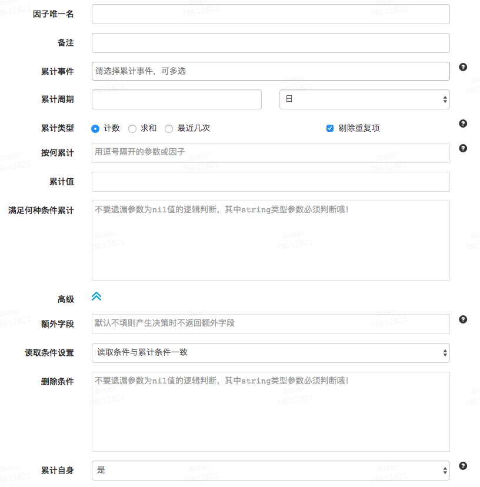
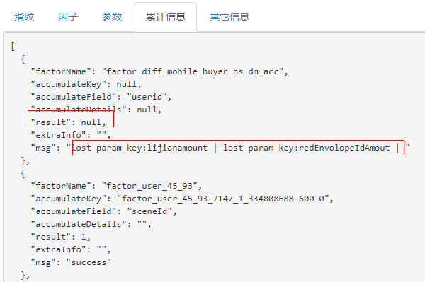

说明：累计使用文档
功能概述
Zeus的表达式因子可实现对单条请求的逻辑判断，但如果要对多条请求进行计数或求和，就需要用到累计。
举个例子：
- 业务发给Zeus的每条请求中都有设备标识uuid、用户账号标识userid，如果要想统计同一设备3天内有多少用户使用，累计就能派上用场。
使用流程
累计事件配置
- 路径：Zeus导航栏 => 因子 => 累计事件（https://zeus.sankuai.com/accumulate_event/event_list）
- 对较成熟的业务，累计事件相对完善，一般无需新增
- 添加累计事件
-
累计事件与累计因子目前是多对多的关系，累计事件可以理解为一类累计聚合的维度，是在发送累计/删除累计时使用的。
- 累计事件如：登陆、下单、支付等，在发送累计时要指定累计事件ID，累计事件是用来挑选对哪些累计因子进行写（加和）操作的一个维度
累计因子配置
- 路径：Zeus导航栏 => 因子 => 添加因子 => 累计因子
- 累计事件：需要写累计的事件，在下拉框中选择配置的累计事件
-
累计周期：要累计的数据保持的时间
- 其实指的是累计服务中存储数据的过期时间，从当前时间往历史推算，超过累计周期时间的数据将被丢弃。
- 其实指的是累计服务中存储数据的过期时间，从当前时间往历史推算，超过累计周期时间的数据将被丢弃。
-
累计类型（累计类型一旦配置不允许修改）
-
计数/求和/最近几次
- 计数：对累计值按累计Key进行计数；求和：对累计值按累计Key进行求和；最近几次：按累计Key累计配置的最近N次的累计值
- 返回值类型：当为计数类型时，返回值类型为整型；当为求和类型时，返回值类型为配置的累计值的类型；当为最近几次类型时，返回值类型是JSON字符串
- 累计最近几次类型时，会多出次数的选项，并且累计自身默认为否且不可更改。累计最近几次使用详见文档：说明：Zeus累计最近几次使用指南
-
剔除重复项
- 勾选剔除重复项需要填写“按何去重”。去重计数时，直接按累计值进行去重；去重求和时，以”按何去重“对累计值进行去重。
- 去重的次数最多为1000次，1000次以后旧数将被丢弃，一直保持1000次
-
-
按何累计：累计的Key，以英文逗号相隔的参数或因子，key可以是一个或多个。
- 示例：对同uuid同ip的userid进行计数，这里的累计Key是uuid和ip拼接后的值

- 该配置值支持规则平台上配置的当前业务方下所有参数以及除了累计因子类型外的所有类型因子
- 示例：对同uuid同ip的userid进行计数，这里的累计Key是uuid和ip拼接后的值
-
累计值：累计Value，要累计的目标
- 示例：对同uuid同ip的userid进行计数，累计值是userid；对同uuid同ip的amount进行求和，累计值是amount
- 该配置值支持规则平台上配置的当前业务方下所有参数以及除了累计因子类型外的所有类型因子
-
满足何种条件累计：发送（写入）累计的条件
- aviator逻辑表达式，结果为bool型，结果为true才会写（发送）累计
-
读取条件设置
- 选项分为 “读取累计条件与写入条件一致“ 和 ”填写读取累计条件“
- 选取“读取累计条件与累计条件一致”则无须填写读取条件，默认与写入(累计)条件一致
-
读取条件：只在读取条件设置为”填写读取累计条件“时填写
- aviator逻辑表达式，结果为bool型，结果为true才会调用累计服务获取累计因子的结果值。
- 删除条件：aviator逻辑表达式，结果为bool型，结果为true才会删除累计
-
累计自身：当前请求过来，是否算上当前这一次，如果是，判断当前请求是否满足读取条件，再把值赋给累计因子
- 注: 该配置仅生效于读累计阶段,并不会最终更新该累计值;(仅在一次决策请求中生效)
- 举个例子：累计因子A当前累计值为1，如果是累计自身，则该请求读取到A因子的值为1+1（因为是累计自身）=2，即A=2。(此时并不影响持久化的结果，即持久化的累计值依然是 1)
反之如果不是累计自身，则读取到A因子的值就是1
发送/删除累计
- 仅与Zeus对接的RD关心，Zeus后台系统使用者不必关注
- 说明：Zeus在线服务OCTO接入文档#说明：Zeus在线服务OCTO接入文档-发送累计接口
规则配置
- 和现有规则没有区别，计数类型时，累计因子推荐以整形进行运算，求和类型时，推荐以双精度型进行运算
累计结果查询
- 路径：Zeus => 日志查询-右侧的结果展示-累计信息
- 下图中的第一个累计因子（factor_diff_mobile_buyer_os_dm_acc）返回结果为null，原因是缺失参数：lijianamount、redEnvolopeIdAmout
- 下图中的第二个累计因子（factor_user_45_93）返回结果为1

修改累计
- 如果当前没有在线或其依赖没有在线，则可以修改
- 如果要修改规则，对应的场景配置已经在线，需要将其下线或强制更新（慎用，紧急情况下可用）
FAQ
Q1.累计问题自查
Q2:为什么累计不是参数而是因子
A：累计结果的信息是通过逻辑包装计算出来的，在系统内部处理时，参数无逻辑，因子有逻辑，因此定义为因子
累计因子的逻辑构成：
（1）累计事件：基于什么数据进行累计
（2）累计周期：累计的时间范围
（3）累计条件：满足何种条件才进行累计
（4）按何累计、累计值：按照哪种主键，累计的是什么
（5）累计计算方法：计数、求和
Q3:累计事件如何配置？
累计事件在配置平台上是一个简单的注册就完成了（说明：累计使用文档），对应到应用上，有两种方式：
（1）业务方直接调用累计的接口，Zeus平台交互使用2个接口（说明：Zeus在线服务OCTO接入文档-发累计接口）发送时提供配置好的事件ID
（2）业务方不直接使用累计接口，Zeus平台交互仅使用一个接口（说明：Zeus在线服务OCTO接入文档 获取任一类型场景决策接口）发送时提供配置好的事件ID
Q4:累计事件如何配置？
如上述问题中的累计周期，支持分钟、日、月、年、自然日自定义之间周期。